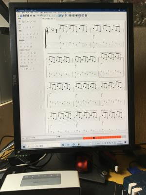

うるがいの話 ある日
最新: ディスプレイモニタを縦に
うるがいとは 前提知識です
カニの画像をクリックすると『うるがいの話』サイトを表示します
うるがい(ｳﾙｶﾞｲ urugai)とは、『もずくがに』の名前でとても大きくなります。
たながー（ﾀﾅｶﾞｰtanagaa）とは手長えびのことで、何種類かあり大きいのは車 エビぐらいになります。
ぶながー(bunagaa)とは、赤い髪の毛、赤い身体、そして身長は１ｍ２０ｃｍ ぐらい、川の蟹を食べているの目撃された。場所は沖縄県国頭郡大宜味村のと ある村僕の隣近所に住んでいる爺さんから、聞いた話です。
2021年09月05日 (日）
ディスプレイモニタを縦に
16:22

楽譜をソフトに打ち込み、ソフトで楽譜を演奏させギターのエクササイズをす
る。が、ディスプレイモニタの横型だと見にくい！。ふと、パソコン２号のモ
ニタをみる、これって縦にできたよな、確か。縦にしてみた、パソコンの設定
でディスプレイを縦にするのだが、マウスが使いずらい、それでもなんとか設
定する。できた、まるで巨大なスマホである。さてさて、楽譜ソフトの表示は
え！、横が縦になっただけで表示できる小節の総数は、同じだ。少しがっかり
ただ、見やすさは縦の方がいい。暫くは縦のままで使ってみよう、と２台のモ
ニタを見ていると暫くして酔った。なんと、目と脳が『横と横』に慣れてしま
って『縦と横』についていけなくなっている。でも、我慢することにして脳を
鍛えることとする。モニタの縦のメリットは、ネットは縦なので見やすいが、
それ以外は・・・。ま、暫く使ってみるとすべ、なおこのモニタは去年の４月
２３日にアマゾンで￥１９，５０６円で購入したもの。
Dell モニター 19インチ P1917S